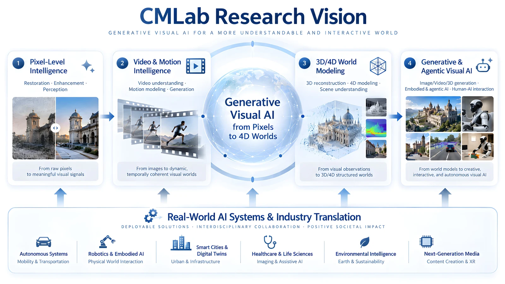

From Pixels
to 4D Worlds.
Restoring, generating, reconstructing, and understanding our visual world. We advance visual intelligence from the smallest pixel to immersive, dynamic 4D experiences.
One vision.
Many dimensions.
CMLab connects visual restoration, temporal modeling, 3D/4D reconstruction, and agentic generation into a unified research agenda.
Pixel-Level Intelligence
From corrupted pixels to meaningful visual detail.
Low-Level Vision · All-in-One Restoration · Super-Resolution · Deblurring · Demoiréing · AI-Generated Content RefinementVideo & Motion Intelligence
From isolated frames to temporally coherent motion.
Motion Modeling · Video Restoration · Frame Interpolation · Temporally Consistent Generation3D/4D World Modeling
From image observations to structured spatial and dynamic worlds.
Physical World Models · Dynamic 4D Scenes · Gaussian Splatting · NeRF · Novel-View Synthesis · Neural RenderingGenerative & Agentic Visual AI
From visual synthesis to controllable and interactive intelligence.
Multimodal Editing · Compositing · Personalization · Controllable Generation · Agentic Visual SystemsReal-World AI Systems & Industry Translation
Deployment and product needs inform our four research directions. Advances across those directions support practical visual AI for multimedia, robotics, and embodied systems.
- Industry-driven Visual AI
- Multimedia Applications
- Physical AI
- Embodied AI
- Robotics
inshorts.ai ↗Ongoing CAIO advisory work and joint research
Superb AI ↗Advisory work on Physical AI data and exploration of robotics research
Research that moves.
Selected publications and preprints. Follow each project to see its technical contributions and visual results.
Loading selected work…
Built to understand
and interact.
Explore the laboratory's full research vision, from pixel-level perception through 4D worlds and real-world applications.

ENLARGE THE RESEARCH VISION ↗What's new.
Loading research news…
Build something
meaningful with us.
Graduate research, international publications, collaborative mentorship.
JOIN CMLAB ↗FOR RESEARCH & INDUSTRY PARTNERSLet's advance
visual AI together.
Academic collaboration, industry translation, and impactful research.
COLLABORATE ↗